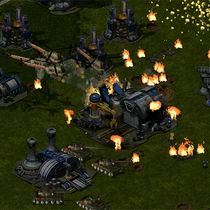
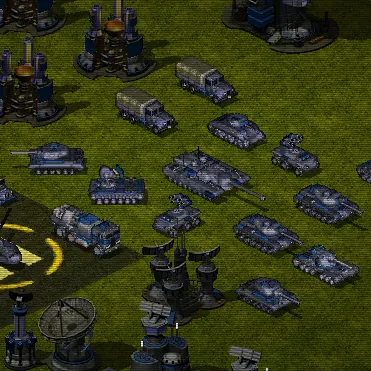
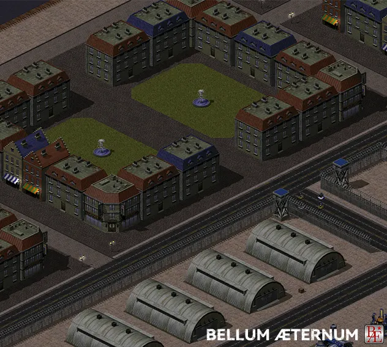
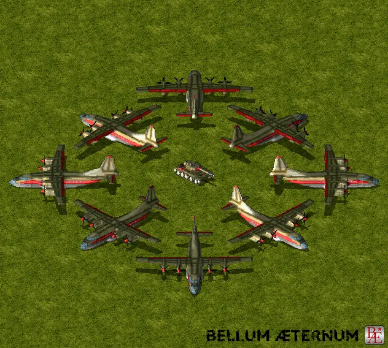
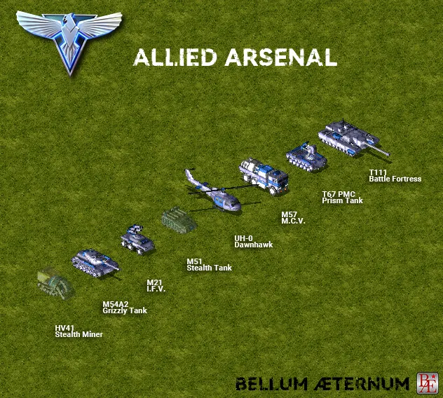

万世之战
更具真实感的红色警戒
《万世之战》是命令与征服：红色警戒2尤里的复仇的一部非官方Mod。
沿袭红警2的部分设定，并填充了丰富的内容与细节。时间线在20世纪50到60年代之间，用红警2的方式叙述那段充满危机的岁月。
万世之战的特色

增强的战场特效

基于现实的单位设计
更真实的比例




《万世之战》是命令与征服：红色警戒2尤里的复仇的一部非官方Mod。
沿袭红警2的部分设定，并填充了丰富的内容与细节。时间线在20世纪50到60年代之间，用红警2的方式叙述那段充满危机的岁月。